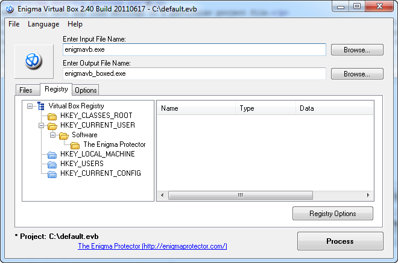
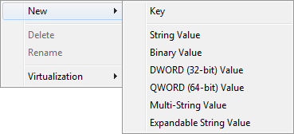
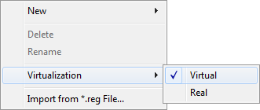
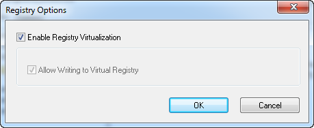

Specify registry virtualization options.

Left panel contains a list of the registry keys and the right panel contains a list of values for the selected registry key.
Registry List
Right click on a key or value to activate popup menu with additional options.

For the string types of value (String, Multi-String, Expandable String) the text may contain a special path variables that will be replaced while the execution on a real path. Path variables match the names of root folders for Files Virtualization. For example, if the registry item has a value %WINDOWS FOLDER%, while execution this value will be replaced with "C:\Windows" (w/o quotes, the Windows installation folder). Note, path variables do not include path delimiter at the end.
New - create new key or value with necessary type
Delete - delete the key (including sub-keys and values) or value
Rename - rename key or value

Virtualization - determines if the key or value is virtualized. If the key/value is marked as virtual, then all attempts of application to write or change information of this key/value will be emulated in memory, real registry won't be affected. If the key/value is marked as real, then Enigma Virtual Box will redirect all requests (read, write) to real registry instead of virtual. Please note, if the system will try to create a value or sub-keys for virtual key then all the changes will be virtual (made in memory only), otherwise, all the sub-keys/values will be written to the real registry. Also note that HKEY_CLASSES_ROOT uses for registering of ActiveX/COM components, and it is recommended to always mark this key as virtual.
Import from *.reg File - allows to import keys and values from the .reg file (i.e. files that are exported from Registry Editor).

Enable Registry Virtualization - enables virtualization of registry